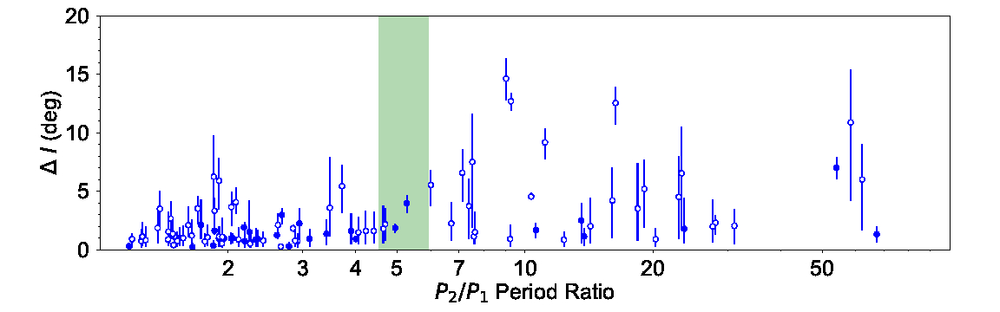
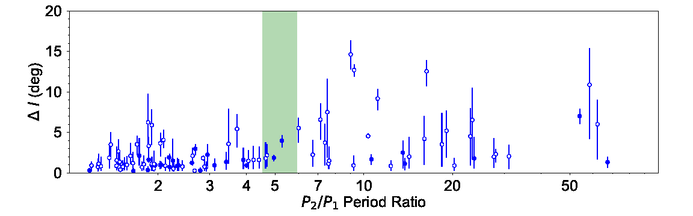

What are Ultra-Short-Period Planets?
At the hottest extreme of planet formation lie the so-called ultra-short-period planets (USP). They can be loosely defined as terrestrial planets with orbital periods shorter than 24 hours. They are found around ∼0.5% of Sun-like stars and almost never exceed 2 R⊕ in size. Subjected to stellar irradiation thousands of times stronger than Earth’s, their equilibrium surface temperatures can surpass 2000K which is hot enough to melt most rock-forming minerals—earning them the nickname "Lava Worlds".
The composition of USP
Ultra-short-period planets (USPs) may represent our best opportunity to constrain the composition of Earth-sized planets in the near future. For a true Earth analog on a one-year orbit around a Sun-like star, the induced radial velocity semi-amplitude is only ~10 cm/s—well below the ~1 m/s precision consistently achieved by state-of-the-art spectrographs. By contrast, a USP, owing to its much shorter orbital period, can induce a radial velocity signal nearly an order of magnitude stronger, placing it within reach of current instrumentation. Furthermore, photoevaporation theory predicts that many USPs should lack significant H/He envelopes, thereby reducing the degeneracy in interpreting planetary core composition from mass and radius measurements alone.
In recent years, we have discovered and measured the masses of eight USP systems using NASA’s K2 and TESS missions together with ground-based facilities such as HARPS, HARPS-N, Magellan/PFS, Keck/HIRES, and Keck/KPF. A major challenge in these measurements is disentangling planetary signals from spurious radial velocity variations induced by stellar activity. To address this, we applied Gaussian Process regression, which models correlated stellar noise through a covariance matrix. Because stellar activity imprints similar signatures in both radial velocities and light curves, we leveraged the higher-precision, higher-cadence light curves to train the Gaussian Process model before applying it to the radial velocity data.
Using this technique, we carried out a homogeneous analysis of all USPs located in the so-called photoevaporation desert (photoevaporation desert > 650 F⊕, read more here). Planets in this regime are expected to be stripped of their H/He envelopes, simplifying the inference of core composition. To refine stellar parameters, we incorporated Gaia DR2 parallaxes, with the resulting mean stellar densities imposed as priors in the transit analysis to better constrain planetary radii.
As a population, USPs are broadly consistent with being exposed rocky cores. None require substantial volatile content that would place them between the 100% water and 100% rock mass–radius relations. This absence of volatiles suggests that most USPs formed from volatile-poor material inside the disk snowline. While individual uncertainties remain large, the ensemble indicates an iron–silicate fraction of 32 ± 4%, remarkably similar to that of Earth.
How did USPs end up so close to their hosts?
At such close-in orbit (often just a few stellar radii away from their host star), USPs pose a significant challenge to planet formation theories. Many lie within the dust sublimation radius, or even within the stellar radius during the pre-main-sequence phase, making it almost impossible that they formed in their present locations.
Several formation scenarios have been proposed to reconcile the existence of USPs with conventional planet formation theories. For example, Lee and Chiang 2017 proposed that the inner edge of planet formation is set by magnetosphere truncation. Planets on shorter periods are increasingly rare because they have to be brought in by asynchronous equilibrium tides after disk dissipation.
An alternative theory proposed by Petrovich et al 2018 claims that USPs were initially the innermost planet of a multi-planet system. The innermost planets can attain high eccentricities through secular interactions with outer companions. Once the eccentricity becomes sufficiently large (~0.8), tidal interactions with the host star dominate, shrinking their orbits. A key prediction of this scenario is that the shortest-period planets should exhibit high mutual inclinations (10–50°) relative to their outer planets, since secular interactions excite eccentricity and inclination together. By contrast, in the dynamically colder scenario of Lee & Chiang, the shortest-period planets are expected to maintain low inclinations.
We tested these ideas by directly measuring the mutual inclinations of ~100 transiting multi-planet systems discovered by Kepler. Orbital inclinations were inferred from the planets’ transit profiles, with Gaia DR2 parallaxes used to refine stellar parameters. The resulting stellar densities were then imposed as priors in the transit analysis to mitigate degeneracies between orbital inclination and stellar density.
 

Our results (Dai et al 2018) show that at larger orbital distance (a/Rs>5), the mutual inclination is generally low typically less than 5 degree or so. This is consistent with previous works such as Tremaine and Dong 2012 (less than 5 deg), Fang and Margot 2012 (less than 3 deg) and Fabrycky et al 2014 (1-2 deg). In contrast, for the shortest-period planets (a/Rs less than 5), the mutual inclinations extend to the larger range of 10-15 deg. Higher inclinations are further associated with larger period ratios between neighboring planets. This trend supports a dynamically hot origin for USPs, in which orbital shrinkage and inclination excitation occur simultaneously e.g. the "Secular Chaos" scenario by Petrovich et al 2018.